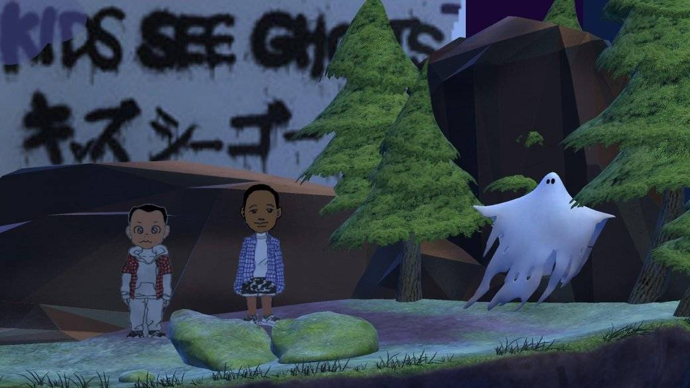

Топ лучших альбомов задержался, потому что я решил воспользоваться новогодними праздниками и нагнать упущенное за год — слишком уж много интересной музыки выходит, хочется охватить как можно больше. Решение было верным, потому что в процессе топ чуть ли ни полностью поменялся. Тут же стоит еще раз напомнить, что категории субъективнее, чем музыка просто не существует. Любая подборка — вкусовщина, какими аргументами ты ее ни снабжай. Так что высказывайтесь об альбомах из нашего списка в комментариях и обязательно рассказывайте, какие релизы в 2018 году впечатлили вас!
Странно упрекать в консервативности синтвейв, направление, которое изначально построено на эстетике восьмидесятых и более-менее четком наборе правил… Но как человек, который подобной музыки слушает ОЧЕНЬ много, я все же часто ловлю себя на мысли, что треки многих музыкантов звучат чересчур похоже. Иногда нет смысла включать кого-то конкретного — просту пускаешь на шаффле плейлист. Это хорошо, когда тебе нужен музыкальный фон, но плохо, когда ты собрался вслушиваться.
Есть и экспериментаторы, конечно — послушайте последний альбом Carpenter Brut. Но много ли в нем осталось синтвейва? А во втором альбоме GUNSHIP его много! При этом звучит он свежо — это проект музыкантов пост-хардкор группы Fightstar и тяжесть основного коллектива частично перекинулась на музыку GUNSHIP, встряхнув привычную синтвейв-формулу.
Проект существует всего три года, но его уже признали многие лидеры жанра и даже сам Джон Карпентер, который поучаствовал в создании клипа на песню Tech Noir. Своими видео GUNSHIP вообще знамениты, обязательно зацените.
Главные фрэшмены тяжелой музыки в 2018 году. Их сингл-кавер Zombie так и вовсе стал платиновым, а клип на него набрал на YouTube 180 миллион просмотров. Впрочем, новичками и ноунеймами музыкантов не назовешь — все играли в более-менее или очень известных группах, а промоутит их гитарист Five Finger Death Punch, у которых в 2018 году тоже вышел альбом, но он попал в наш топ худших пластинок.
Альбом Disobey — продуманный коммерческий проект, песни для него начали писать еще в 2015 году, но в этом нет ничего плохого! Мы получили достаточно жесткий, качественный по всем параметрам металкор-альбом, добившейся успеха, попавший в чарты — без натужных попыток влезть в популярный формат. Мощнейший дебют в метал-музыке за последние годы.
8. The Good, the Bad & the Queen — Merrie Land
Супергруппа Дэймона Албарна выпустила первый за одиннадцать лет альбом. Кроме Албарна, в группе играют музыканты из The Clash и The Verve, а также легендарный джазовый барабанщик Тони Аллен — один из сооснователей направления афробит. Merrie Land — идейное продолжение пластинки Parklife группы Blur (настоящий столп брит-попа) и глубокое исследование Албарна на тему: «Что такое быть британцем?». Это особенно актуально во времена «брексита», надо сказать, и не чуждое не-британцам — учитывая, какой вклад в мировую культуру, особенно музыкальную, внесла эта нация.
Но это если верить словам самого Албарна и если вас волнует смысловая нагрузка альбома. Потому что за пределами смыслов — это невероятно спокойная, гипнотизирующая почти усыпляющая работа, наполненная прекрасными мелодиями Албарна и сложными ритмами Аллена. Очень мягкий инструментальный звук, который так и тянет назвать ламповым.
7. The Smashing Pumpkins — Shiny And Oh So Bright, Vol. 1 / LP: No Past. No Future. No Sun.
The Smashing Pumpkins — это Билли Корган. Он не просто душа группы, он и есть группа — не так уж важно, кто еще в ней играет. Это мнение, конечно, спорное, поэтому войны фанатов касательно лучшего состава The Smashing Pumpkins (а он менялся постоянно, все их перестановки — отдельная история) не утихают до сих пор.
Новый альбом группы — первый после почти полного воссоединения классического состава, c гитаристом Джеймсом Иха и барабанщиком Джимми Чемберлином, а выпущен он к тридцатилетию коллектива. Пресса раскритиковала пластинку за общую безыдейность и разрозненный звук. Концепции нет. Дескать, Корган просто показал как хорошо, и какую разную музыку он все еще может писать, выпустив не столько альбом, сколько сборник демок. Я с этим согласен, но для меня все это — как раз весомый повод включить Shiny And Oh So Bright, Vol. 1 / LP: No Past. No Future. No Sun. в топ, пусть и не на первые позиции.
6. The 1975 — A Brief Inquiry into Online Relationships
Вокалист The 1975 Мэтт Хили в одном из интервью заявил, что с новой пластинкой группа хочет достигнуть высот OK Computer и The Queen Is Dead — выпустить важнейший альбом десятилетия. Многие пишут, что у них получилось (в полнейшем восторге, например, остался наш кинокритик Егор Парфененков), но рассудит время.
С чем я соглашусь прямо сейчас — новый альбом The 1975 потрясающе отражает дух времени и мысли молодых поколений (и миллениалов, и Z). Социальные проблемы, переживания, теперь уже вечная тема «одиночества в сети» и рассуждения на тему онлайн-отношений — альбом об этом. Через пару десятков лет он вполне может оказаться полноценным срезом эпохи. К тому же и в своем звуке он гармонично мешает все более-менее популярные сегодня музыкальные течения — от мелодичного эмбиента до танцевальной поп-музыки и трэпа. Это хорошо, но это же может оттолкнуть некоторых слушателей — на мой вкус пластинка всегда звучит интересно, но далеко не всегда приятно.
5. Superorganism — Superorganism
Интернет-проект из восьми участников. Очень-очень странная фанковая поп-психоделика, использующая в качестве сэмплов вообще любые звуки. Сэмплирование некоторые считают ленью, но это сильнейший музыкальный прием, если его правильно использовать. Оно позволяет наполнить песню специфической атмосферой, ностальгией и даже новыми смыслами. Именно благодаря сэмплам я до сих пор не могу перестать слушать альбом и выискивать новые детали в миксе.
У Superorganism очень богатая, неформатная и уникальная музыка (хотя некоторые сравнивают их с Animal Collective, что все равно — приличный комплимент). На альбоме Superorganism интересно вслушиваться в каждую секунду каждой песни — это самый запоминающийся музыкальный опыт 2018 года. Ну и совершенно поехавшие гипнотизирующие клипы не забывайте — они делают проект еще лучше!
Про Poppy я уже писал в главных музыкальных открытиях 2017 года. Так что она второй раз подряд попадает в наш топ — круто же! Постараюсь передать суть этого персонажа максимально коротко, потому что если копаться, то можно обнаружить себя так глубоко, что отдельную статью писать придется.
Poppy — это медиапроект: милая приторная девочка с ASMR-голосом, выпускающая музыку, клипы и ведущая странный ютуб-канал, который появился даже раньше музыки. Там она дает интервью манекену, ест сладкую вату, перечисляет известных людей, десять минут повторяет «I am Poppy», поздравляет с рождеством комнатный цветок и делает другие интересные вещи — есть даже небольшой веб-сериал. Разумеется за всем этим есть идея и сам идеолог — продюссер Тайтаник Синклер. Суть проекта — деконструкция современной поп-индустрии и откровенная сатира в ее сторону, иногда на грани пародии. Но с этим можно спорить — ни сама Poppy, ни Тайтаник ничего объяснять не собираются.
Разумеется, идея отражается и в музыке, которая удивительно собранно плавает от поп-песенок, которые будто вырвались из чарта Billboard до инди-попа, внезапных диско-треков и издевательского, но годного даже вне контекста ню-метал. Если подумать, почти весь наш топ состоит из таких вот смесей. Ну и за строчки вроде: «Chic chick, Iʼm a chic chick, Iʼm a chic chick. If you donʼt like it suck my dick» не любить Poppy невозможно. Альбом сам по себе, возможно, не так ценен (хоть и чертовски хорош), но вместе с проектом в целом — явление уникальное и достойное внимания.
2018-й — отличный год для тяжелой музыки. Она сразу на двух (почти на трех, если считать Poppy) позициях в нашем топе, но и помимо этого вышло еще немало качественных альбомов. Вот список, с чем стоит ознакомиться — сходу из головы, покопавшись, можно найти еще больше:
- Digital Divide — Shadow Domain
- Shinedown — ATTENTION ATTENTION
- All That Remains — Victim of the New Disease
- Rivers of Nihil — Where Owls Know My Name
- Underoath — Erase Me
- Annisokay — Arms
- Dance Gavin Dance — Artficial Selection
Но выше всех забрались музыканты из Architects. В 2016-м от рака скончался гитарист группы Том Сирл — переломный момент в истории коллектива и жизни его участников. О боли и борьбе с ней как раз и рассказывает пластинка. Вернее, не рассказывает, а кричит — пронзительно и очень искренне. Похожие темы в этом году исследовал Майк Шинода на своем альбоме Post Traumatic — его тоже стоит послушать, он до нашего списка не дотянул совсем немного.
Но в топе Holy Hell не только благодаря пробирающей личной лирике — это мощнейший рок, не скучный, современный, техничный, умный, при этом остающийся по-настоящему тяжелым.
2. Kids See Ghosts — KIDS SEE GHOSTS
2018 год был очень насыщенным для Канье Уэста в творческом плане. Летом он спродюсировал и выпустил сразу пять альбомов: для Pusha T и Тейаны Тейлор, совместный релиз с Kid Cudi, сольник и пластинку для рэпера Nas. Все работы в целом хороши, но отдельно хочется выделить сольник ye и как раз Kids See Ghosts — это одновременно и название альбома, и имя дуэта Канье и Кади (может, будут и другие релизы?).
Оба релиза очень экспериментальны, оба исследуют схожие личные темы — душевных переживаний, психологических расстройств и всего неизбежного негатива, который сваливается на человека вместе со славой и деньгами. Но если на ye говорит один только Канье, то на Kids See Ghosts к нему присоединяется Кади, у которого печального опыта чуть ли ни больше — включая серьезные проблемы с наркотиками и относительно недавний рехаб. Уже в этом совместная пластинка сильнее. Но она разнообразнее и собраннее в том числе и в плане звука — здесь нет гаражной сырости ye, все сведено и продумано так, будто над песнями работали очень-очень долго. И если ye экспериментировал в основном с рок-звуком, то совместка уходит еще дальше, цепляя гранж (тут даже есть сэмпл Курта Кобейна), лоу-фай хип-хоп, психоделику и много чего еще. Но как всегда — важно не количество, а уместность всех этих элементов.
В 2018 году рэп-сцена стала скучнее и форматнее, застряв в кругу самоповторов. Хитов, конечно же, море — один только Scorpion Дрейка ими наполнен. Но сложнее было выделить что-то по-настоящему цепляющее и удивляющее. Хорошо, что Канье выпустил Kids See Ghosts — это одна из лучших его работ и, наверное, лучшая у Кади. И несмотря на то, что в нашем топе альбом обошел ye — их все равно лучше слушать в связке.
1. Awolnation — Here Come the Runts
«Я ищу что-то настоящее. Потому что все нас окружающее — фальшивка. Наша еда — фальшивка. Наши отношения — фальшивка. Музыка, которую мы слушаем тоже. Вообще все»
В начале 2018 года Awolnation записали EP на виниле в особой студии в Вене на оборудовании 1960-х годов. Без сведения и мастеринга, перед фанатами — живая запись одним дублем со всеми ее недостатками и форс-мажорами (на одной из песен, например, у барабанщика сломалась педаль). Зачем? На этот вопрос как раз отвечает цитата выше принадлежащая вокалисту группы Аарону Бруно. Она же, пожалуй, описывает всю концепцию альбома Here Come the Runts. И слава всем богам, что такие мысли не превратили Бруно в «городского сумасшедшего», а вылились в значимое творческое произведение.
Музыка Awolnation никогда не была лощеной — некоторая сырость и надрывный голос Бруно как раз и сделали имя группе. В ее главном хите Sail (79 недель в топе 100 Billboard) Аарон местами мажет мимо нот, а ударная секция выбивается из темпа на протяжении всей записи — в этом признались сами музыканты. Но это не помешало (или даже помогло) песне стать хитом. На Here Come the Runts музыканты еще сильнее ушли в «живой звук» с гремящими гитарами и чуть ли не вылетающими из общего микса ударными с натуральным ревербом — будто группа играет перед тобой прямо сейчас. И это работает! Awolnation никогда не были такими ламповыми и по-хорошему тяжелыми — их даже к условному электро-року уже не причислишь. В одном из интервью Бруно говорил, что несовершенство позволяет установить более глубокую связь со слушателем. Кажется, и вправду помогает — в редакции никто не возражал против того, чтобы именно этот альбом занял первую строчку.
На протяжении всего альбома Бруно истерично кричит, тут же переходя на мягкий вкрадчивый голос и легкий головной звук. Он мастерски использует оттенки своего голоса, чтобы поддержать каждое слово. Он выплескивает все, что накопилось в его голове за долгие-долгие годы, говорит обо всем, что его волнует. И выражается он вместе с группой максимально неожиданно: трэш-метал, рок-баллады в духе 50-х, кантри с вайбом Джонни Кэша, психоделика с атмосферой Primus, наследие Kiss и бешеный панк-рок — здесь есть все и все к месту.